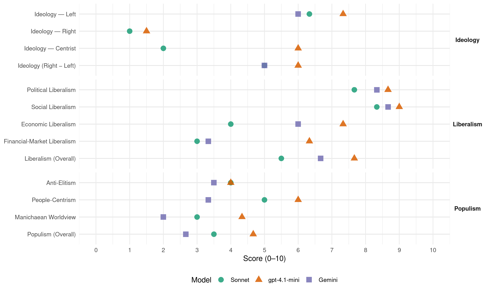

SPD (Germany, 2009)
manifesto_id 41320_200909
Get full text: This site shows derived annotations and short verbatim quotes only. The full manifesto text is © Manifesto Project / WZB — obtain it via manifesto-project.wzb.eu using the manifesto_id above.
Headline scores
| Dimension | Sonnet | gpt-4.1-mini | Gemini |
|---|---|---|---|
| Populism (Overall) | 3.5 | 4.7 | 2.7 |
| Anti-Elitism | 4.0 | 4.0 | 3.5 |
| People-Centrism | 5.0 | 6.0 | 3.3 |
| Manichaean Worldview | 3.0 | 4.3 | 2.0 |
| Ideology (Right − Left) | 5.0 | 6.0 | 5.0 |
| Liberalism (Overall) | 5.5 | 7.7 | 6.7 |
| Political Liberalism | 7.7 | 8.7 | 8.3 |
| Social Liberalism | 8.3 | 9.0 | 8.7 |
| Economic Liberalism | 4.0 | 7.3 | 6.0 |
| Financial-Market Liberalism | 3.0 | 6.3 | 3.3 |
Evidence per dimension
Economic Liberalism
Gemini · score 6.0 · verified · chunk 1
“fördern verantwortliches Unternehmertum durch einen fairen Wettbewerb”
Börsenumsatzsteuer nach dem Vorbild der britischen Stempelsteuer einführen. Gleichzeitig setzen wir uns dafür ein, dass eine solche Steuer europaweit eingeführt und auf weitere Finanztransaktionen erhoben wird. Fairer Wettbewerb als ordnungspolitische Leitidee · Wirkungsvolle Wettbewerbs- und Kartellpolitik. Wir fördern verantwortliches Unternehmertum durch einen fairen Wettbewerb. Unternehmerische Freiheit und soziale
Gemini · score 6.0 · verified · chunk 2
“Prinzip eines freien und fairen Welthandels”
Wir stehen zu dem Prinzip eines freien und fairen Welthandels. Die Bewältigung der Wirtschaftskrise darf nicht
Gemini · score 6.0 · verified · chunk 3
“freien und fairen Welthandels”
Wir stehen zu dem Prinzip eines freien und fairen Welthandels. Die Bewältigung der Wirtschaftskrise darf
gpt-4.1-mini · score 8.0 · verified · chunk 1
“Die Soziale Marktwirtschaft ist das Erfolgsmodell unseres Wohlstand und unserer Demokratie”
Wir müssen unser Wirtschafts- und Gesellschaftsmodell nicht neu erfinden. Die Soziale Wirtschaftsordnung als Wirtschaftsordnung einer Sozialen Demokratie hat sich bewährt. Die Soziale Marktwirtschaft ist das Erfolgsmodell unseres Wohlstand und unserer Demokratie. Sie hat Deutschland stark gemacht und sie kann es auch in Zukunft tun.
gpt-4.1-mini · score 7.0 · verified · chunk 2
“Unsere Steuerpolitik folgt dem Prinzip, wirtschaftliche Dynamik mit sozialer Gerechtigkeit zu verbinden.”
Unsere Steuerpolitik folgt dem Prinzip, wirtschaftliche Dynamik mit sozialer Gerechtigkeit zu verbinden. Bei der Besteuerung von Unternehmen haben wir wichtige Fortschritte erzielt. Einem weitergehenden Steuersenkungswettlauf werden wir entschieden entgegentreten.
gpt-4.1-mini · score 7.0 · verified · chunk 3
“Wir fordern eine neue europäische Offensive zur Stärkung der Wettbewerbsfähigkeit insbesondere der kleinen und mittleren Unternehmen”
Starker Mittelstand, weniger Bürokratie. Wir fordern eine neue europäische Offensive zur Stärkung der Wettbewerbsfähigkeit insbesondere der kleinen und mittleren Unternehmen und des Handwerks in Europa, mit erleichtertem Zugang zu Krediten und dem weiteren Abbau von bürokratischen Lasten im europäischen Binnenmarkt.
Sonnet · score 5.0 · mixed · chunk 1
“den Kräften des Marktes Regeln und Grenzen setzen”
Ob wir die richtigen Lehren aus der globalen Finanz- und Wirtschaftskrise ziehen und den Kräften des Marktes Regeln und Grenzen setzen. Ob wir ein nachhaltiges Deutschland schaffen, das ein Gleichgewicht zwischen wirtschaftlichen, sozialen und ökologischen Zielen herstellt.
Sonnet · score 4.0 · verified · chunk 2
“Geld folgt den Studierenden”
die Hochschulfinanzierung auf ein wettbewerbliches Anreizsystem nach dem Prinzip ‘Geld folgt den Studierenden’ umstellen. Damit wollen wir einen positiven Wettbewerb der Länder um die Studierwillige erreichen.
Sonnet · score 4.0 · verified · chunk 3
“freien und fairen Welthandels”
Freier und fairer Welthandel. Wir stehen zu dem Prinzip eines freien und fairen Welthandels. Die Bewältigung der Wirtschaftskrise darf nicht zu Abschottung und Protektionismus führen.
Financial-Market Liberalism
Gemini · score 3.0 · verified · chunk 1
“Finanzdienstleister müssen wieder zu ihrer dienenden Funktion”
Was wir wollen: Neue Regeln für die Finanzmärkte · Regeln für die Banken. Die Finanzdienstleister müssen wieder zu ihrer dienenden Funktion für die Gesellschaft und die Realwirtschaft zurückfinden
Gemini · score 3.0 · verified · chunk 2
“Börsenumsatzsteuer nach dem Vorbild der britischen”
Börsenumsatzsteuer. Zur Eindämmung kurzfristiger Spekulationen wollen wir eine Börsenumsatzsteuer nach dem Vorbild der britischen Stempelsteuer in Höhe von
Gemini · score 4.0 · verified · chunk 3
“weltweiten Finanzarchitektur neu ordnen”
Weltweite Finanzarchitektur neu ordnen. Die globale Wirtschafts- und Finanzkrise
gpt-4.1-mini · score 7.0 · verified · chunk 1
“Wir wollen eine Stärkung und qualitative Verschärfung der Finanzmarktaufsicht in der Bundesrepublik”
Stabile Finanzmärkte sind ein öffentliches Gut. Auf nationaler, europäischer und internationaler Ebene muss es eine starke und handlungsfähige Finanzmarktaufsicht geben: kein Markt, kein Produkt, kein Akteur, kein Territorium und kein Staat darf in Zukunft unbeaufsichtigt bleiben. … Wir wollen eine Stärkung und qualitative Verschärfung der Finanzmarktaufsicht in der Bundesrepublik. Dies bedeutet: Besondere Geschäftsrisiken müssen mit höheren Eigenkapitalanforderungen hinterlegt werden.
gpt-4.1-mini · score 5.0 · verified · chunk 2
“Wir wollen eine Börsenumsatzsteuer nach dem Vorbild der britischen Stempelsteuer in Höhe von 0,5 Prozent bis 1,5 Prozent einführen.”
Wir wollen eine Börsenumsatzsteuer nach dem Vorbild der britischen Stempelsteuer in Höhe von 0,5 Prozent (Normalsatz) bis 1,5 Prozent (Sonderfälle) des Kurswertes auf börsliche Wertpapiergeschäfte ab einem Umsatz von 1.000 Euro einführen.
gpt-4.1-mini · score 7.0 · verified · chunk 3
“Wir wollen starke internationale Institutionen, die für Transparenz und Risikokontrolle sorgen”
Weltweite Finanzarchitektur neu ordnen. Die globale Wirtschafts- und Finanzkrise eröffnet neue Möglichkeiten zur politischen Neuordnung der weltweiten Finanzarchitektur. Wir wollen starke internationale Institutionen, die für Transparenz und Risikokontrolle sorgen und Fehlentwicklungen vermeiden.
Sonnet · score 4.0 · mixed · chunk 1
“Börsenumsatzsteuer nach dem Vorbild der britischen Stempelsteuer”
Zur Eindämmung kurzfristiger Spekulationen wollen wir zunächst eine Börsenumsatzsteuer nach dem Vorbild der britischen Stempelsteuer einführen. Gleichzeitig setzen wir uns dafür ein, dass eine solche Steuer europaweit eingeführt wird.
Sonnet · score 3.0 · verified · chunk 2
“Börsenumsatzsteuer nach dem Vorbild der britischen Stempelsteuer”
Zur Eindämmung kurzfristiger Spekulationen wollen wir eine Börsenumsatzsteuer nach dem Vorbild der britischen Stempelsteuer in Höhe von 0,5 Prozent (Normalsatz) bis 1,5 Prozent (Sonderfälle) des Kurswertes auf börsliche Wertpapiergeschäfte einführen.
Sonnet · score 3.0 · verified · chunk 3
“Kein Markt, kein Akteur, kein Staat”
Wir wollen starke internationale Institutionen, die für Transparenz und Risikokontrolle sorgen und Fehlentwicklungen vermeiden. Kein Markt, kein Akteur, kein Staat und Territorium, kein Produkt darf unbeaufsichtigt bleiben!
Political Liberalism
Gemini · score 8.0 · verified · chunk 1
“Mit dem Grundgesetz haben wir eine demokratische Verfassung”
von Deutschland ausging und der Europa verwüstete, auch unser Land neu aufgebaut. Mit dem Grundgesetz haben wir eine demokratische Verfassung, die ein lebendiges, forderndes
Gemini · score 8.0 · verified · chunk 2
“Schutz der Freiheitsrechte der Bürgerinnen”
Zum Schutz der Freiheitsrechte der Bürgerinnen und Bürger haben wir die Kompetenzen der Sicherheitsbehörden
Gemini · score 9.0 · verified · chunk 3
“Grundgesetz in Kraft getreten”
Willy Brandt vor 40 Jahren gefordert. Vor 60 Jahren ist das Grundgesetz in Kraft getreten. Das Grundgesetz, seine Wertorientierungen
gpt-4.1-mini · score 9.0 · verified · chunk 1
“Wir sind ein demokratischer und sozialer Bundesstaat”
Klarer und besser geht es nicht: · Die Würde des Menschen ist unantastbar. · Die Freiheit der Person ist unverletzlich. · Alle Menschen sind vor dem Gesetz gleich. · Männer und Frauen sind gleichberechtigt. · Jeder hat das Recht, seine Meinung frei zu äußern. · Eigentum verpflichtet. · Wir sind ein demokratischer und sozialer Bundesstaat. Wir wollen ein Land und eine Gesellschaft, die nach den Regeln des Grundgesetzes leben und die diesen Regeln Achtung verschafften, wo es sich als nötig erweist.
gpt-4.1-mini · score 8.0 · verified · chunk 2
“Wir stehen für starke, offene und demokratische Hochschulen. Wir stehen zur Hochschulautonomie und zur universitären Selbstverwaltung.”
Wir stehen für starke, offene und demokratische Hochschulen. Wir stehen zur Hochschulautonomie und zur universitären Selbstverwaltung. Wir wollen die inneruniversitäre Demokratie stärken: Alle Statusgruppen müssen fair in Entscheidungen und Gremien eingebunden werden.
gpt-4.1-mini · score 9.0 · verified · chunk 3
“Demokratie ist Herrschaft des Volkes. Das heißt: Es sind die Bürgerinnen und Bürger, die sich frei und selbstbestimmt Regeln für ihr Zusammenleben geben.”
13. Mehr Demokratie wagen Demokratie ist Herrschaft des Volkes. Das heißt: Es sind die Bürgerinnen und Bürger, die sich frei und selbstbestimmt Regeln für ihr Zusammenleben geben. Wir in Deutschland wissen, dass das eine große zivilisatorische Errungenschaft ist, die wir gegen alle Gefahren verteidigen müssen.
Sonnet · score 8.0 · verified · chunk 1
“Aufbruch zu mehr Demokratie und neuer Gemeinsamkeit”
Es entscheidet sich, wie es nach der Krise in unserem Land weitergeht. Ob daraus ein Aufbruch zu mehr Demokratie und neuer Gemeinsamkeit wird. Ob Verantwortungsgefühl und Vernunft wieder die Oberhand gewinnen.
Sonnet · score 7.0 · verified · chunk 2
“Demokratische Hochschule”
Wir stehen für starke, offene und demokratische Hochschulen. Wir stehen zur Hochschulautonomie und zur universitären Selbstverwaltung. Wir wollen die inneruniversitäre Demokratie stärken.
Sonnet · score 8.0 · verified · chunk 3
“Direkte Demokratie. Wir wollen Volksbegehren”
Direkte Demokratie. Wir wollen Volksbegehren und Volksentscheide auch auf Bundesebene ermöglichen und dabei die Erfahrungen in den Ländern berücksichtigen.
Liberalism (Overall)
Gemini · score 6.0 · verified · chunk 1
“Soziale Marktwirtschaft bedeutet für uns mehr als Ordnungspolitik”
Staat, der klare Regeln für die Soziale Marktwirtschaft setzt. Ein Neustart der Sozialen Marktwirtschaft muss eine Antwort auf den entfesselten Kapitalismus des 21. Jahrhunderts sein. Soziale Marktwirtschaft bedeutet für uns mehr als Ordnungspolitik. Einem wirklichen Neustart legen wir
Gemini · score 7.0 · verified · chunk 2
“Schutz der Freiheitsrechte der Bürgerinnen”
Zum Schutz der Freiheitsrechte der Bürgerinnen und Bürger haben wir die Kompetenzen der Sicherheitsbehörden
Gemini · score 7.0 · verified · chunk 3
“Grundgesetz in Kraft getreten”
Willy Brandt vor 40 Jahren gefordert. Vor 60 Jahren ist das Grundgesetz in Kraft getreten. Das Grundgesetz, seine Wertorientierungen
gpt-4.1-mini · score 8.0 · verified · chunk 1
“Die Soziale Marktwirtschaft ist das Erfolgsmodell unseres Wohlstand und unserer Demokratie”
Wir müssen unser Wirtschafts- und Gesellschaftsmodell nicht neu erfinden. Die Soziale Wirtschaftsordnung als Wirtschaftsordnung einer Sozialen Demokratie hat sich bewährt. Die Soziale Marktwirtschaft ist das Erfolgsmodell unseres Wohlstand und unserer Demokratie. Sie hat Deutschland stark gemacht und sie kann es auch in Zukunft tun.
gpt-4.1-mini · score 7.0 · verified · chunk 2
“Wir stehen für starke, offene und demokratische Hochschulen. Wir stehen zur Hochschulautonomie und zur universitären Selbstverwaltung.”
Wir stehen für starke, offene und demokratische Hochschulen. Wir stehen zur Hochschulautonomie und zur universitären Selbstverwaltung. Wir wollen die inneruniversitäre Demokratie stärken: Alle Statusgruppen müssen fair in Entscheidungen und Gremien eingebunden werden.
gpt-4.1-mini · score 8.0 · verified · chunk 3
“Demokratie ist Herrschaft des Volkes. Das heißt: Es sind die Bürgerinnen und Bürger, die sich frei und selbstbestimmt Regeln für ihr Zusammenleben geben.”
13. Mehr Demokratie wagen Demokratie ist Herrschaft des Volkes. Das heißt: Es sind die Bürgerinnen und Bürger, die sich frei und selbstbestimmt Regeln für ihr Zusammenleben geben. Wir in Deutschland wissen, dass das eine große zivilisatorische Errungenschaft ist, die wir gegen alle Gefahren verteidigen müssen.
Sonnet · score 6.0 · mixed · chunk 1
“handlungsfähigen demokratischen Staat, der klare Regeln setzt”
Wir setzen auf den handlungsfähigen demokratischen Staat, der klare Regeln für die Soziale Marktwirtschaft setzt. Ein Neustart der Sozialen Marktwirtschaft muss eine Antwort auf den entfesselten Kapitalismus des 21. Jahrhunderts sein.
Sonnet · score 5.0 · verified · chunk 2
“Freier und fairer Welthandel”
Wir stehen zu dem Prinzip eines freien und fairen Welthandels. Die Bewältigung der Wirtschaftskrise darf nicht zu Abschottung und Protektionismus führen.
Sonnet · score 6.0 · verified · chunk 3
“Homophobie weltweit ächten”
Homophobie weltweit ächten. Wir setzen uns aktiv für die Verhinderung der Verfolgung Angehöriger sexueller Minderheiten ein.
Anti-Elitism
Gemini · score 4.0 · verified · chunk 1
“unverantwortliche und zum Teil skrupellose Handeln”
gewaltigen Aufgaben. Das unverantwortliche und zum Teil skrupellose Handeln an den internationalen Finanzmärkten hat die Welt
Gemini · score 3.0 · verified · chunk 2
“unverantwortlichen Handeln der Finanzmanager liegen”
Während die Ursachen der Krise in erster Linie im unverantwortlichen Handeln der Finanzmanager liegen und die Vermögenden von diesem Fehlverhalten profitiert
gpt-4.1-mini · score 6.0 · verified · chunk 1
“Die Lasten der Krise dürfen nicht einseitig den Bürgerinnen und Bürgern aufgebürdet werden”
Wir lassen niemanden allein. Wir wollen, dass alle Menschen ein selbstbestimmtes Leben führen können, einen gerecht bezahlten Arbeitsplatz haben und Aufstieg durch Bildung möglich ist. … Die Lasten der Krise dürfen nicht einseitig den Bürgerinnen und Bürgern aufgebürdet werden. Wir brauchen einen solidarischen Lastenausgleich, der die für die Krise Verantwortlichen und die Vermögenden an der finanziellen Bewältigung der Lasten beteiligt.
gpt-4.1-mini · score 3.0 · verified · chunk 2
“Wer seine Gewinne in Deutschland erwirtschaftet, soll hierzulande seine Steuern zahlen.”
Wer seine Gewinne in Deutschland erwirtschaftet, soll hierzulande seine Steuern zahlen. Wer das nicht macht, schadet allen, die mit ihren Steuern die Leistungen des Staates finanzieren müssen.
gpt-4.1-mini · score 3.0 · verified · chunk 3
“Die Wirtschaft und die Finanzmärkte müssen der Gesellschaft dienen, nicht umgekehrt.”
Im Grundgesetz steht: Eigentum verpflichtet. Das gilt auch für den Besitz von Geld und Aktien. Die Wirtschaft und die Finanzmärkte müssen der Gesellschaft dienen, nicht umgekehrt. Das ist nicht nur eine Frage der Gerechtigkeit, sondern entscheidet über die Zukunft der Demokratie, über die Bereitschaft der Bürgerinnen und Bürger, sich für und in der Demokratie zu engagieren.
Sonnet · score 5.0 · mixed · chunk 1
“Die Gier muss gestoppt werden”
Neue Regeln durchsetzen. Die Finanzmärkte brauchen neue Regeln. Die Gier muss gestoppt werden. Wir haben im nationalen Rahmen erste Regeln durchgesetzt
Sonnet · score 4.0 · verified · chunk 2
“Ursachen der Krise in erster Linie im unverantwortlichen Handeln der Finanzmanager”
Während die Ursachen der Krise in erster Linie im unverantwortlichen Handeln der Finanzmanager liegen und die Vermögenden von diesem Fehlverhalten profitiert haben, hat die Allgemeinheit die Kosten zu tragen.
Sonnet · score 4.0 · verified · chunk 3
“Dominanz der Märkte und von der Gleichgültigkeit”
Unsere Demokratie ist von verschiedenen Seiten bedroht, nicht zuletzt von der Dominanz der Märkte und von der Gleichgültigkeit der Menschen.
Ideology — Centrist
gpt-4.1-mini · score 7.0 · verified · chunk 1
“Wir Sozialdemokratinnen und Sozialdemokraten laden alle Menschen ein, mit uns gemeinsam den Weg der Erneuerung zu gehen”
Die Wirtschaft ist für die Menschen da und nicht umgekehrt. Wir Sozialdemokratinnen und Sozialdemokraten laden alle Menschen ein, mit uns gemeinsam den Weg der Erneuerung zu gehen. Denn darum geht es: Kraftvolle Erneuerung für unser Land!
gpt-4.1-mini · score 5.0 · verified · chunk 2
“Wir wollen eine Kultur der Anerkennung, die kulturelle Vielfalt nicht leugnet, sondern die kulturelle Unterschiede als Möglichkeit von neuer Gemeinsamkeit begreift.”
Wir wollen eine Kultur der Anerkennung, die kulturelle Vielfalt nicht leugnet, sondern die kulturelle Unterschiede als Möglichkeit von neuer Gemeinsamkeit begreift. Das allein genügt aber nicht.
gpt-4.1-mini · score 6.0 · verified · chunk 3
“Demokratie ist Herrschaft des Volkes. Das heißt: Es sind die Bürgerinnen und Bürger, die sich frei und selbstbestimmt Regeln für ihr Zusammenleben geben.”
13. Mehr Demokratie wagen Demokratie ist Herrschaft des Volkes. Das heißt: Es sind die Bürgerinnen und Bürger, die sich frei und selbstbestimmt Regeln für ihr Zusammenleben geben. Wir in Deutschland wissen, dass das eine große zivilisatorische Errungenschaft ist, die wir gegen alle Gefahren verteidigen müssen.
Sonnet · score 2.0 · verified · chunk 2
“wirtschaftliche Dynamik mit sozialer Gerechtigkeit zu verbinden”
Unsere Steuerpolitik folgt dem Prinzip, wirtschaftliche Dynamik mit sozialer Gerechtigkeit zu verbinden.
Sonnet · score 2.0 · verified · chunk 3
“Mehr Demokratie wagen”
13. Mehr Demokratie wagen Demokratie ist Herrschaft des Volkes. Das heißt: Es sind die Bürgerinnen und Bürger, die sich frei und selbstbestimmt Regeln für ihr Zusammenleben geben.
Ideology — Left
Gemini · score 8.0 · verified · chunk 1
“gerechte Verteilung von Einkommen und Vermögen”
faire Teilhabe der Arbeitnehmer am gesellschaftlichen Wohlstand und eine gerechte Verteilung von Einkommen und Vermögen aus sozialen und aus volkswirtschaftlichen
Gemini · score 4.0 · verified · chunk 2
“Starke Schultern müssen mehr tragen”
dass sich die Gesamtsteuerlast gerecht nach Leistungskraft verteilt. Das heißt für uns: Starke Schultern müssen mehr tragen als schwache.
gpt-4.1-mini · score 8.0 · verified · chunk 1
“Die Beantwortung der Verteilungsfragen im sozialdemokratischen Sinne stärkt unsere Demokratie und unsere Soziale Marktwirtschaft”
Wir stellen fest: Das marktradikale Zeitalter ist gescheitert. Wir befinden uns in einer Zeitenwende. Die Beantwortung der Verteilungsfragen im sozialdemokratischen Sinne stärkt unsere Demokratie und unsere Soziale Marktwirtschaft. Wir Sozialdemokratinnen und Sozialdemokraten wollen Soziale Demokratie.
gpt-4.1-mini · score 7.0 · verified · chunk 2
“Unsere Steuerpolitik folgt dem Prinzip, wirtschaftliche Dynamik mit sozialer Gerechtigkeit zu verbinden.”
Unsere Steuerpolitik folgt dem Prinzip, wirtschaftliche Dynamik mit sozialer Gerechtigkeit zu verbinden. Bei der Besteuerung von Unternehmen haben wir wichtige Fortschritte erzielt.
gpt-4.1-mini · score 7.0 · verified · chunk 3
“Die Wirtschaft und die Finanzmärkte müssen der Gesellschaft dienen, nicht umgekehrt.”
Im Grundgesetz steht: Eigentum verpflichtet. Das gilt auch für den Besitz von Geld und Aktien. Die Wirtschaft und die Finanzmärkte müssen der Gesellschaft dienen, nicht umgekehrt. Das ist nicht nur eine Frage der Gerechtigkeit, sondern entscheidet über die Zukunft der Demokratie, über die Bereitschaft der Bürgerinnen und Bürger, sich für und in der Demokratie zu engagieren.
Sonnet · score 6.0 · verified · chunk 1
“faire Teilhabe der Arbeitnehmer am gesellschaftlichen Wohlstand”
Die faire Teilhabe der Arbeitnehmer am gesellschaftlichen Wohlstand und eine gerechte Verteilung von Einkommen und Vermögen aus sozialen und aus volkswirtschaftlichen Gründen.
Sonnet · score 6.0 · verified · chunk 2
“Anhebung des Spitzensteuersatzes als ‘Bildungssoli’”
schlagen wir einen Zuschlag als ‘Bildungssoli’ bei der Besteuerung höchster Einkommen vor. Dabei wird der Spitzensteuersatz auf 47 Prozent ab einem zu versteuernden Einkommen von 125.000 Euro angehoben.
Sonnet · score 7.0 · verified · chunk 3
“den Kapitalismus zu zivilisieren durch Mitbestimmung”
SPD und Gewerkschaften in Deutschland bewiesen, dass es möglich ist, den Kapitalismus zu zivilisieren durch Mitbestimmung in Betrieb und Unternehmen, durch Arbeitnehmerrechte
Ideology (Right − Left)
Gemini · score 7.0 · verified · chunk 1
“Beantwortung der Verteilungsfragen im sozialdemokratischen Sinne”
Wir befinden uns in einer Zeitenwende. Die Beantwortung der Verteilungsfragen im sozialdemokratischen Sinne stärkt unsere Demokratie und unsere Soziale
Gemini · score 3.0 · verified · chunk 2
“Starke Schultern müssen mehr tragen”
dass sich die Gesamtsteuerlast gerecht nach Leistungskraft verteilt. Das heißt für uns: Starke Schultern müssen mehr tragen als schwache.
gpt-4.1-mini · score 7.0 · verified · chunk 1
“Die Beantwortung der Verteilungsfragen im sozialdemokratischen Sinne stärkt unsere Demokratie und unsere Soziale Marktwirtschaft”
Wir stellen fest: Das marktradikale Zeitalter ist gescheitert. Wir befinden uns in einer Zeitenwende. Die Beantwortung der Verteilungsfragen im sozialdemokratischen Sinne stärkt unsere Demokratie und unsere Soziale Marktwirtschaft. Wir Sozialdemokratinnen und Sozialdemokraten wollen Soziale Demokratie.
gpt-4.1-mini · score 5.0 · verified · chunk 2
“Unsere Steuerpolitik folgt dem Prinzip, wirtschaftliche Dynamik mit sozialer Gerechtigkeit zu verbinden.”
Unsere Steuerpolitik folgt dem Prinzip, wirtschaftliche Dynamik mit sozialer Gerechtigkeit zu verbinden. Bei der Besteuerung von Unternehmen haben wir wichtige Fortschritte erzielt.
gpt-4.1-mini · score 6.0 · verified · chunk 3
“Unsere Demokratie ist von verschiedenen Seiten bedroht, nicht zuletzt von der Dominanz der Märkte”
Unsere Demokratie ist von verschiedenen Seiten bedroht, nicht zuletzt von der Dominanz der Märkte und von der Gleichgültigkeit der Menschen. ,,Mehr Demokratie wagen’’, hat Willy Brandt vor 40 Jahren gefordert.
Sonnet · score 5.0 · verified · chunk 1
“Starke Schultern müssen mehr tragen als schwache”
Sozialdemokratinnen und Sozialdemokraten in Regierungsverantwortung stehen dafür, dass sich die Gesamtsteuerlast gerecht nach Leistungskraft verteilt. Das heißt für uns: Starke Schultern müssen mehr tragen als schwache.
Sonnet · score 4.0 · verified · chunk 2
“Börsenumsatzsteuer”
Zur Eindämmung kurzfristiger Spekulationen wollen wir eine Börsenumsatzsteuer nach dem Vorbild der britischen Stempelsteuer in Höhe von 0,5 Prozent einführen.
Sonnet · score 6.0 · verified · chunk 3
“den Kapitalismus zu zivilisieren durch Mitbestimmung”
SPD und Gewerkschaften in Deutschland bewiesen, dass es möglich ist, den Kapitalismus zu zivilisieren durch Mitbestimmung in Betrieb und Unternehmen, durch Arbeitnehmerrechte
Ideology — Right
gpt-4.1-mini · score 2.0 · verified · chunk 2
“Deutschland ist ein Einwanderungsland. Einwanderer haben mitgeholfen, unser Land erfolgreich zu machen.”
Deutschland ist ein Einwanderungsland. Einwanderer haben mitgeholfen, unser Land erfolgreich zu machen. Jetzt ist es an der Zeit, mit ihren Kindern und Enkeln ein modernes, gemeinsames Deutschland zu schaffen.
gpt-4.1-mini · score 1.0 · verified · chunk 3
“Wir lehnen eine Leitkulturdebatte ab, denn sie ist mit der Idee von Freiheit und Gleichheit nicht vereinbar.”
Im Grundgesetz steht: Die Würde des Menschen ist unantastbar. Das bezieht sich ausdrücklich auf alle Menschen. Wir lehnen eine Leitkulturdebatte ab, denn sie ist mit der Idee von Freiheit und Gleichheit nicht vereinbar. Wir betrachten den Kampf gegen Rechtsextremismus als eine der wichtigsten Aufgaben unserer Gesellschaft.
Sonnet · score 1.0 · verified · chunk 2
“Deutschland muss attraktiver für Fachkräfte werden”
Wir müssen und wollen attraktiver für Einwanderer werden. Wir wollen qualifizierte Einwanderung besser ermöglichen und steuern.
Sonnet · score 1.0 · verified · chunk 3
“Kampf gegen Rechtsextremismus, Fremdenfeindlichkeit”
Starke Demokratie - Bekämpfung von Rechtextremismus, Fremdenfeindlichkeit und Antisemitismus
Manichaean Worldview
Gemini · score 3.0 · verified · chunk 1
“Der Gier sollten keine Grenzen gesetzt”
persönlichen Vergütung ist lange Jahre als normal erklärt worden. Der Gier sollten keine Grenzen gesetzt werden. Der Marktradikalismus hat dieses
Gemini · score 1.0 · verified · chunk 2
“Gemeinschaft der Steuerzahler vorenthalten”
werden jährlich Milliarden Euro der Gemeinschaft der Steuerzahler vorenthalten, häufig auch durch betrügerische
gpt-4.1-mini · score 6.0 · verified · chunk 1
“Diese Krise ist mehr als ein normaler Konjunktureinbruch. Sie ist das Ergebnis einer Ideologie, bei der maximaler Profit und nicht der Mensch im Mittelpunkt steht”
Viele sagen: ,,Diese Krise war ein Betriebsunfall. Lasst ihn uns beheben, dann geht es weiter wie bisher.’’ Diese Auffassung ist falsch! Denn diese Krise ist mehr als ein normaler Konjunktureinbruch. Sie ist das Ergebnis einer Ideologie, bei der maximaler Profit und nicht der Mensch im Mittelpunkt steht. Und deshalb muss unsere Antwort mehr als ein Konjunkturprogramm sein.
gpt-4.1-mini · score 3.0 · verified · chunk 2
“Während die Ursachen der Krise in erster Linie im unverantwortlichen Handeln der Finanzmanager liegen”
Während die Ursachen der Krise in erster Linie im unverantwortlichen Handeln der Finanzmanager liegen und die Vermögenden von diesem Fehlverhalten profitiert haben, hat die Allgemeinheit die Kosten zu tragen.
gpt-4.1-mini · score 4.0 · verified · chunk 3
“Unsere Demokratie ist von verschiedenen Seiten bedroht, nicht zuletzt von der Dominanz der Märkte”
Unsere Demokratie ist von verschiedenen Seiten bedroht, nicht zuletzt von der Dominanz der Märkte und von der Gleichgültigkeit der Menschen. ,,Mehr Demokratie wagen’’, hat Willy Brandt vor 40 Jahren gefordert.
Sonnet · score 4.0 · mixed · chunk 1
“Der Marktradikalismus ist weltweit gescheitert”
Politik darf nicht nur reparieren, Politik muss vorausschauend handeln, Ursachen der Krisen erkennen und beseitigen. Der Marktradikalismus ist weltweit gescheitert, damit auch die Politik maßgeblicher Teile von Union und FDP.
Sonnet · score 3.0 · verified · chunk 2
“Allgemeinheit die Kosten zu tragen”
die Vermögenden von diesem Fehlverhalten profitiert haben, hat die Allgemeinheit die Kosten zu tragen. Um zumindest einen teilweisen Ausgleich der Lasten zu erreichen, bündeln wir wichtige Maßnahmen
Sonnet · score 3.0 · verified · chunk 3
“Die Wirtschaft und die Finanzmärkte müssen der Gesellschaft dienen”
Eigentum verpflichtet. Das gilt auch für den Besitz von Geld und Aktien. Die Wirtschaft und die Finanzmärkte müssen der Gesellschaft dienen, nicht umgekehrt.
People-Centrism
Gemini · score 5.0 · verified · chunk 1
“nicht der Mensch im Mittelpunkt steht”
Ideologie, bei der maximaler Profit und nicht der Mensch im Mittelpunkt steht. Und deshalb muss unsere Antwort mehr als
Gemini · score 2.0 · verified · chunk 2
“Demokratie ist Herrschaft des Volkes”
13. Mehr Demokratie wagen Demokratie ist Herrschaft des Volkes. Das heißt: Es sind die Bürgerinnen und
Gemini · score 3.0 · verified · chunk 3
“Demokratie ist Herrschaft des Volkes”
Mehr Demokratie wagen Demokratie ist Herrschaft des Volkes. Das heißt: Es sind die Bürgerinnen und
gpt-4.1-mini · score 7.0 · verified · chunk 1
“Wir Sozialdemokratinnen und Sozialdemokraten laden alle Menschen ein, mit uns gemeinsam den Weg der Erneuerung zu gehen”
Wir Sozialdemokratinnen und Sozialdemokraten wollen Soziale Demokratie. Und das heißt auch: Sozialstaat und Soziale Marktwirtschaft in Deutschland, in Europa und weltweit. Die Wirtschaft ist für die Menschen da und nicht umgekehrt. Wir Sozialdemokratinnen und Sozialdemokraten laden alle Menschen ein, mit uns gemeinsam den Weg der Erneuerung zu gehen. Denn darum geht es: Kraftvolle Erneuerung für unser Land!
gpt-4.1-mini · score 4.0 · verified · chunk 2
“Der Sozialstaat ist organisierte Solidarität: Er gründet sich darauf, dass Menschen füreinander einstehen”
Der Sozialstaat ist organisierte Solidarität: Er gründet sich darauf, dass Menschen füreinander einstehen Starke für Schwache, Junge für Alte, Gesunde für Kranke und Pflegebedürftige, Arbeitende für Arbeitsuchende: Die Gemeinschaft für Hilfebedürftige.
gpt-4.1-mini · score 7.0 · verified · chunk 3
“Demokratie ist Herrschaft des Volkes.”
13. Mehr Demokratie wagen Demokratie ist Herrschaft des Volkes. Das heißt: Es sind die Bürgerinnen und Bürger, die sich frei und selbstbestimmt Regeln für ihr Zusammenleben geben. Wir in Deutschland wissen, dass das eine große zivilisatorische Errungenschaft ist, die wir gegen alle Gefahren verteidigen müssen.
Sonnet · score 5.0 · verified · chunk 1
“Unser Regierungsprogramm ist ein Angebot an die gesamte Gesellschaft”
Wir Sozialdemokratinnen und Sozialdemokraten laden alle Menschen ein, mit uns gemeinsam den Weg der Erneuerung zu gehen. Unser Regierungsprogramm ist ein Angebot an die gesamte Gesellschaft. Es richtet sich an alle, die unser Land besser, gerechter und menschlicher machen wollen.
Sonnet · score 4.0 · verified · chunk 2
“Starke Schultern müssen mehr tragen als schwache”
Das heißt für uns: Starke Schultern müssen mehr tragen als schwache. Denn sie können mehr tragen als schwache. Unsere Steuerpolitik folgt dem Prinzip, wirtschaftliche Dynamik mit sozialer Gerechtigkeit zu verbinden.
Sonnet · score 6.0 · verified · chunk 3
“Demokratie ist Herrschaft des Volkes”
Mehr Demokratie wagen Demokratie ist Herrschaft des Volkes. Das heißt: Es sind die Bürgerinnen und Bürger, die sich frei und selbstbestimmt Regeln für ihr Zusammenleben geben.
Populism (Overall)
Gemini · score 4.0 · verified · chunk 1
“Das marktradikale Zeitalter ist gescheitert”
mehr als ein Konjunkturprogramm sein. Wir stellen fest: Das marktradikale Zeitalter ist gescheitert. Wir befinden uns in einer Zeitenwende.
Gemini · score 2.0 · verified · chunk 2
“unverantwortlichen Handeln der Finanzmanager liegen”
Während die Ursachen der Krise in erster Linie im unverantwortlichen Handeln der Finanzmanager liegen und die Vermögenden von diesem Fehlverhalten profitiert
Gemini · score 2.0 · verified · chunk 3
“Demokratie ist Herrschaft des Volkes”
Mehr Demokratie wagen Demokratie ist Herrschaft des Volkes. Das heißt: Es sind die Bürgerinnen und
gpt-4.1-mini · score 6.0 · verified · chunk 1
“Wir brauchen einen solidarischen Lastenausgleich, der die für die Krise Verantwortlichen und die Vermögenden an der finanziellen Bewältigung der Lasten beteiligt”
Die Lasten der Krise dürfen nicht einseitig den Bürgerinnen und Bürgern aufgebürdet werden. Wir brauchen einen solidarischen Lastenausgleich, der die für die Krise Verantwortlichen und die Vermögenden an der finanziellen Bewältigung der Lasten beteiligt. Neue Regeln durchsetzen. Die Finanzmärkte brauchen neue Regeln. Die Gier muss gestoppt werden.
gpt-4.1-mini · score 3.0 · verified · chunk 2
“Wer seine Gewinne in Deutschland erwirtschaftet, soll hierzulande seine Steuern zahlen.”
Wer seine Gewinne in Deutschland erwirtschaftet, soll hierzulande seine Steuern zahlen. Wer das nicht macht, schadet allen, die mit ihren Steuern die Leistungen des Staates finanzieren müssen.
gpt-4.1-mini · score 5.0 · verified · chunk 3
“Unsere Demokratie ist von verschiedenen Seiten bedroht, nicht zuletzt von der Dominanz der Märkte”
Unsere Demokratie ist von verschiedenen Seiten bedroht, nicht zuletzt von der Dominanz der Märkte und von der Gleichgültigkeit der Menschen. ,,Mehr Demokratie wagen’’, hat Willy Brandt vor 40 Jahren gefordert.
Sonnet · score 4.0 · mixed · chunk 1
“Das marktradikale Zeitalter ist gescheitert”
Viele sagen: Diese Krise war ein Betriebsunfall. Lasst ihn uns beheben, dann geht es weiter wie bisher. Diese Auffassung ist falsch! Denn diese Krise ist mehr als ein normaler Konjunktureinbruch. Das marktradikale Zeitalter ist gescheitert.
Sonnet · score 3.0 · verified · chunk 2
“unverantwortlichen Handeln der Finanzmanager”
Während die Ursachen der Krise in erster Linie im unverantwortlichen Handeln der Finanzmanager liegen und die Vermögenden von diesem Fehlverhalten profitiert haben, hat die Allgemeinheit die Kosten zu tragen.
Sonnet · score 4.0 · verified · chunk 3
“Dominanz der Märkte und von der Gleichgültigkeit”
Unsere Demokratie ist von verschiedenen Seiten bedroht, nicht zuletzt von der Dominanz der Märkte und von der Gleichgültigkeit der Menschen.
Social Liberalism